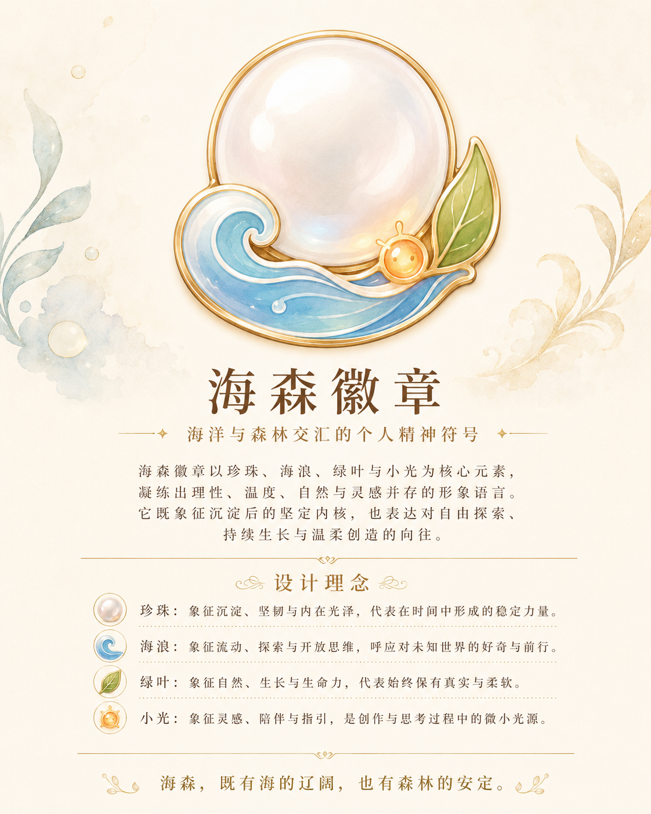

THE MAKER
西西 · Xixi
在技术与自然之间探索的 AI 产品创造者。她观察、记录、拆解，也在证据不足时保留判断。

一位把可能变成路径的产品创造者，和一束陪在身边、负责照亮线索的光。
在技术与自然之间探索的 AI 产品创造者。她观察、记录、拆解，也在证据不足时保留判断。
不是宠物，也不是只负责可爱的吉祥物。它是好奇、灵感与尚未被证明的可能；会照亮节点，也会指向另一条路。
她不是冷峻的技术角色，也不是只提供安慰的治愈角色；她是一个温柔的理性主义者。
先确认系统边界，再寻找证据；不急着把局部现象当成结论。
清晰不等于制造距离。她愿意把复杂机制整理成别人可以使用的语言。
小光让她记得，已经成立的方法之外，仍可能存在值得继续观察的方向。
把经验沉淀成能复用的能力，也为生活、自然与新的感受留出空间。
核心识别资产保持稳定；动作、服装与场景随内容变化，但不替换角色身份。
西西胸前佩戴海森珍珠徽章：珍珠代表沉淀，海浪代表变化与未知，叶片代表生长与连接，小光则代表仍然值得被看见的可能。
阅读徽章与设计系统 →
两篇原始设计文档分别承担不同的角色：一篇讲“怎么诞生”，另一篇讲“最终相信什么”。